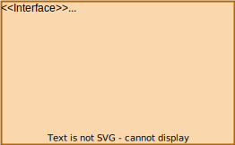

Introduction
SCRUM goal
In the Sprint1 we aim to analyze the problems linked to the modeling of the core service and, ultimately, create a functioning prototype.Core Service
The core service is identified by the following elements:
- Wasteservice
- Transport Trolley
- Waste Truck/Driver
Requirements
Problem analysis
Map and Trolley movement
The first problem we are going to tackle is how the transport trolley/DDR robot moves within the space of the service.The customer has given us an image of the layout but, for obvious reasons, the robot cannot understand them, so it has no idea where to go or what to look for. We can theorize some solutions to this problem:
Without Map Coordinates
This solution requires no planning, as it uses the specified layout given by the customer to move the trolley.
By abusing the fact that all points of interest are located on a wall adjacent to a corner, all the robot needs to do is move along the walls and find the target by colliding with it.
If, by chance, the trolley received a different command, it would just need to turn in the right direction/orientation and keep moving.
PROS - Easily scalable to all room sizes.
- No need for prior room mapping of coordinates.
CONS - The movement logic is strictly tied to the layout. Even the smallest change would require a lot of work, making this solution not flexible.
- Determining the complete logic is a complex problem.
With Map Coordinates
This solution uses pre-determined coordinates to move the trolley.
To use the coordinates, the room is divided into squares with dimensions based on RD using a mapper.
Then, each point of interest (HOME, INDOOR, PLASTICBOX, GLASSBOX) is assigned to some of the coordinates.
 The customer provides 3 useful tools:
The customer provides 3 useful tools:
- unibo.mapperQak22: Creates a map of the room in the form of a string by moving the robot around and saving movement and collision data.
- unibo.planner22: Finds a path for the robot by using target coordinates.
- unibo.pathexecutor: Moves the robot along a certain pre-determined path.
PROS - Easily scalable to all room layouts.
- Easy to implement, as the customer provides a lot of useful software.
CONS - Mapping the room and assigning coordinates takes time.
- The room's dimensions might not be multiples of RD, so additional movements may be required to reach all points of interest.
In the first place, it's necessary to further introduce the tools provided by the customer that will be used to solve the problem:
mapperQak22
 The mapper is qak actor and provides us a map of the room in which the system will operate. It works by communicating with the real/virtual robot (starting from the HOME position)
and making it move inside the room while keeping track of its layout and dimensions.
The mapper is qak actor and provides us a map of the room in which the system will operate. It works by communicating with the real/virtual robot (starting from the HOME position)
and making it move inside the room while keeping track of its layout and dimensions.Once the robot has explored the whole room, mapperQak22 stops sending commands and saves the resulting map in two files with different types:
- ().txt which is useful to show the map layout.
- ().bin will be used later by the planner.
As of now, this seems to be a good way to map the service area.
planner22
The methods provided are summarized in the following interface: 
- initAI: initialize a breadth-first algorithm used to plan the best path.
- loadRoomMap: loads the binary map file, assuming the robot position in [0,0].
- showMap: shows a visual array representation of the current state of the map.
- setGoal: sets the goal position in coordinates.
- doPlan: uses the AI to plan the best path from the current position to the goal.
- startTimer: starts a timer.
- getDuration: returns the time passed from the last start of the timer.
pathexecutor
Currently this string is hard-coded, we intend to use the planner to get this string and send it to this actor. We will later define this methods.
Assigning points of interest to coordinates on the map
After generating the map, we have to assign all points of interest (HOME, INDOOR, PLASTIC BOX, GLASS BOX) to the coordinates.Considering the image provided by the customer, we can see that HOME is a space on the floor; however, the other points are mapped on the walls.
How can we decide when the trolley is interacting with these points ?
We have decided that if the robot enters the spaces adjacent to the walls and faces towards those walls, then it is able to interact with them.
As an example, let's take a map generated by mapperQak22 using the virtual robot environment:
|r, 1, 1, 1, 1, 1, 1,
|1, 0, 0, 0, 0, 0, 1,
|1, 0, 0, 0, 0, 0, 1,
|1, 0, 0, 0, 0, 0, 1,
|1, 1, 1, 1, 1, 1, 1,
r is the robot in its HOME position. For now, these are the sizes and general positions of all points of interest based on the general coordinates of a map:
| Name | Size | Position |
|---|---|---|
|
||
 |
|
|
|
||
|
|
WARNING: these definitions are based on a rough image and could be subject to change.
Moreover, this information could be hardcoded in the system, however we thought it would be better to create a configuration file in case these definitions have to be change (we have also considered the option to generate the file as part of the mapping process).
The following is an example of that configuration file created for the initial map in the virtual robot environment:
{
"positions": {
"home" : [
[0, 0]
],
"indoor": [
[0, 4], [1, 4], [2, 4]
],
"glassbox": [
[4, 0], [5, 0], [6, 0]
],
"plasticbox": [
[6, 2], [6, 3], [6, 4]
]
}
}